Menu: Estoque > Estoque (o título da tela é "DEVOLUÇÃO DA PRODUÇÃO") · Situação do manual: Em ajuste (testado parcialmente em 19/11/2026, com 13 prints; parcial: nenhum lote do ambiente tem saída para produção, então a devolução em si não foi gravada; os passos que dependem do lote e a conta sem permissão ficaram Bloqueados no teste) · Situação da tela: real, com formulário completo; testada em parte · Fonte dos prints: versão nova.
Testado parcialmente em 19/11/2026 (rodada
execucao/2026-11-19-pista-c/, com a conta de administrador). Tudo o que está abaixo sem a marca "do legado" foi visto na tela. O que depende de um lote que saiu para produção não foi possível testar e está marcado Bloqueado no teste, com o motivo. As marcas (API nova) = código do servidor, foto de 17/11/2026, ainda não vistas na tela; (do legado; a confirmar na versão nova) = manual do legado. Correções feitas em 19/11/2026 ao rascunho da nuvem: (1) a tela tem formulário completo (o rascunho dizia que não tinha); (2) o Tipo de Movimentação vem travado em "SAÍDA PARA PRODUÇÃO" (o rascunho dizia "DEVOLUÇÃO DE PRODUÇÃO"); (3) a recusa do lote termina com exclamação, como no legado.
Para que serve
Devolve ao estoque a sobra de material que saiu para uma ordem de produção e não foi usada. A lista tem os filtros Período (data inicial até data final), Item de Entrada e Item, os botões PESQUISAR e LIMPAR e o link Incluir; a barra não tem IMPRIMIR nem EXCEL. O formulário tem o quadro "Dados da Movimentação" (código, data, tipo, ordem de produção, motivo e observação) e o quadro "Dados do Lote" (Item de Entrada com lupa, dados do lote e quantidade devolvida, mais CONFIRMAR LOTE). Pela API nova, ao finalizar o sistema grava a movimentação e a sobra volta ao saldo dos endereços, sem análise do CQ, sem volumes e sem etiqueta (API nova; a gravação não foi possível testar, ver "Prints que faltam"). Usa o almoxarifado; a Produção entrega a sobra, mas não opera a tela. É diferente da Devolução (outra origem) e da Entrada de Produção (produto acabado). Situação da tela: parcial (desenho, filtros e recusas vistos; a devolução em si, Bloqueada no teste).
Como era no legado (do legado; a confirmar na versão nova):
A Devolução da Produção devolve ao estoque a sobra de material que saiu para uma ordem de produção e não foi usada. O usuário informa o "Item de Entrada" (o código do lote no estoque), a quantidade devolvida, o número da ordem de produção, o motivo e uma observação, e distribui a quantidade em endereços. Ao finalizar, o sistema grava uma movimentação "DEVOLUÇÃO DA PRODUÇÃO" (tipo 12) e o material volta direto ao saldo dos endereços, sem análise do CQ, sem volumes e sem etiqueta (devolucao_producao_ed.aspx.cs:167-200). Usa o almoxarifado; a Produção entrega a sobra, mas não opera a tela. É diferente da Devolução (outra origem) e da Entrada de Produção (produto acabado). Situação no inventário: bloqueada no teste.
Antes de começar (o que precisa existir)
| O que precisa existir | Para quê | Onde se cadastra |
|---|---|---|
| Usuário administrador (perfil 1) | Só ele abre o Estoque (DV-EST-N-001); o teste de 19/11/2026 usou a conta "Admin" | Principal > Administração |
| Lote que saiu para produção | A busca recusa lote sem "movimentação para produção" (vista na tela: "Lote não encontrado ou não possui movimentação para produção!") | Atendimento e Separação de uma solicitação de Produção. Bloqueado no teste em 19/11/2026: dos 11.999 Itens de Entrada consultados (1 a 12000, só leitura), nenhum tem saída para produção; as solicitações 99527 e 99528 (tela 25) não foram atendidas pelo robô, para não colidir com a pista A (telas 33 e 34). Responsável: Produção ou desenvolvimento. Não é defeito da tela |
| Endereços livres compatíveis | A sobra precisa voltar a algum endereço | Estoque > Endereço do Estoque (tela 22) |
| Almoxarifado do grupo do usuário | Limita os destinos | Cadastros > Grupo de Usuário - Almoxarifado |
Segundo o manual do legado (do legado; a confirmar na versão nova):
| Precisa existir | Para quê | Onde se cadastra |
|---|---|---|
| Lote que saiu por solicitação do tipo Produção (ligada a uma ordem de produção) | Sem isso a tela recusa o lote (devolucao_producao_ed.aspx.cs:243; dalItemLote.cs:348-362). No ambiente de teste a solicitação de Produção não nasce (DV-EST-076 e DV-EST-063) | Módulo Produção; Estoque › Solicitação de Material (Produção) |
| Item de Entrada do lote, a quantidade que sobrou e o número da ordem de produção | São informados na tela; a ordem não é conferida | Com a Produção |
| Endereço livre ou já com saldo do mesmo lote, no almoxarifado do grupo | Para guardar a sobra (devolucao_producao_ed.aspx.cs:515-535) | Estoque › Endereço do Estoque; Grupo Usuário - Almoxarifado |
Passo a passo
- Abrir a tela. No menu Estoque, clique em Devolução da Produção. Título "DEVOLUÇÃO DA PRODUÇÃO"; quadro Pesquisa com Período (duas datas), Item de Entrada e Item; botões PESQUISAR e LIMPAR e o link Incluir.
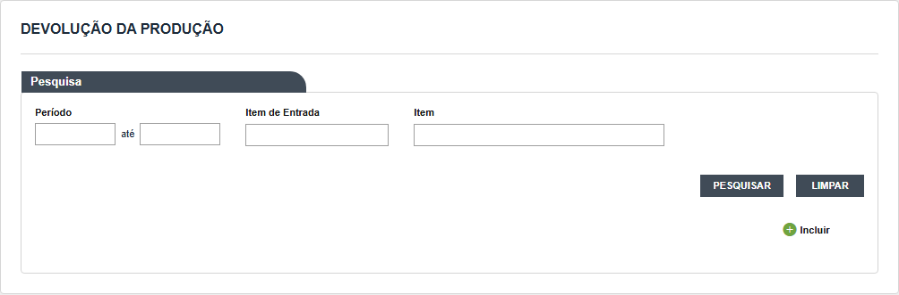
A imagem mostra o desenho da lista, sem linhas antes de pesquisar. Não há IMPRIMIR nem EXCEL.
- Pesquisar. Clique em PESQUISAR. A grade tem DATA, ITEM DE ENTRADA, ITEM, Nº OP e uma última coluna estreita sem título (no legado, o ícone Visualizar). Como o ambiente não tem nenhuma devolução gravada, a resposta é "A pesquisa não retornou nenhum resultado." (igual ao legado).
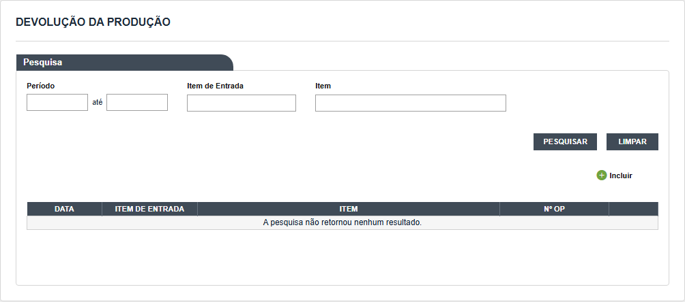
- Usar os filtros. Todos os filtros devolvem a mesma lista vazia, porque não há devolução gravada:
- Período: com só a data inicial, com as duas datas e com a inicial maior que a final, a lista vem vazia, sem aviso. A máscara das datas corrige o que é impossível (digitar 99999999 virou 01/11/2029), por isso a mensagem "Data inicial inválida!" do legado não aparece. Não foi possível confirmar se o filtro só vale com as duas datas (lista vazia).
- Item de Entrada (até 20 caracteres)
000001e Item (até 150)MED: lista vazia.
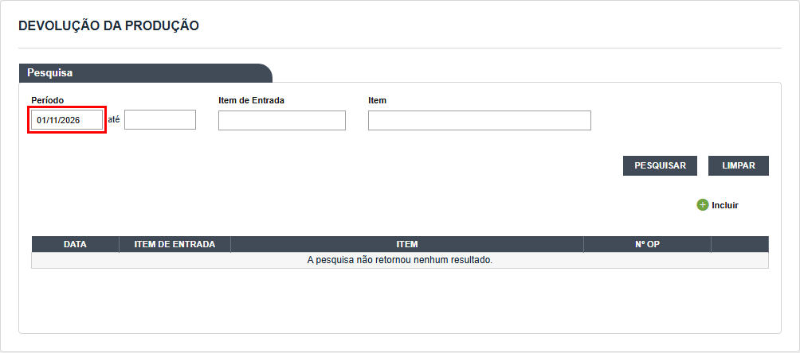
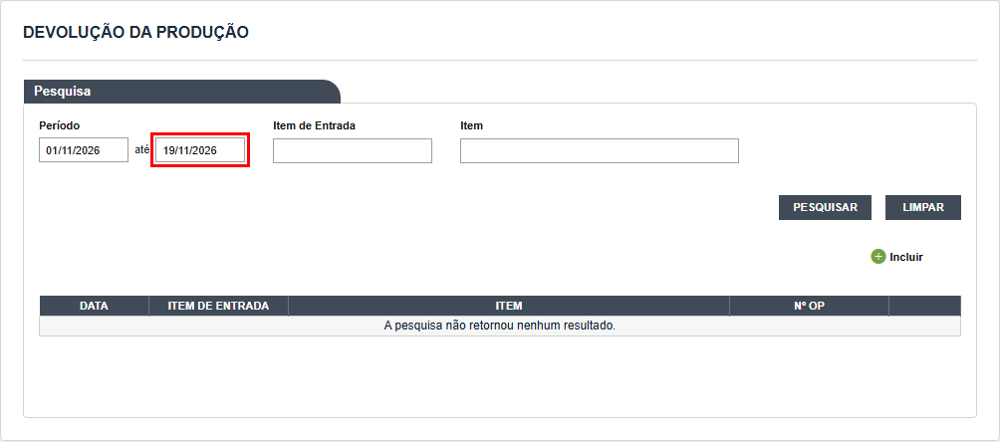
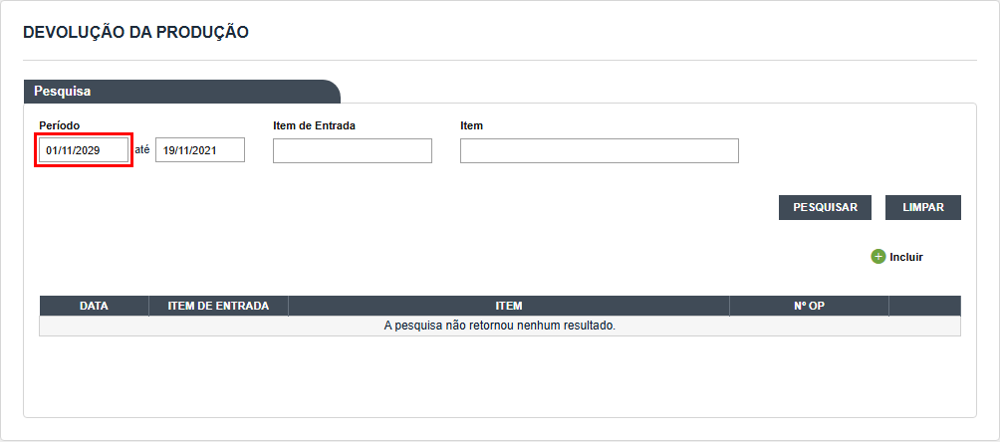
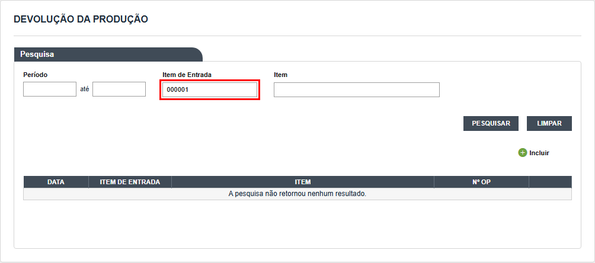
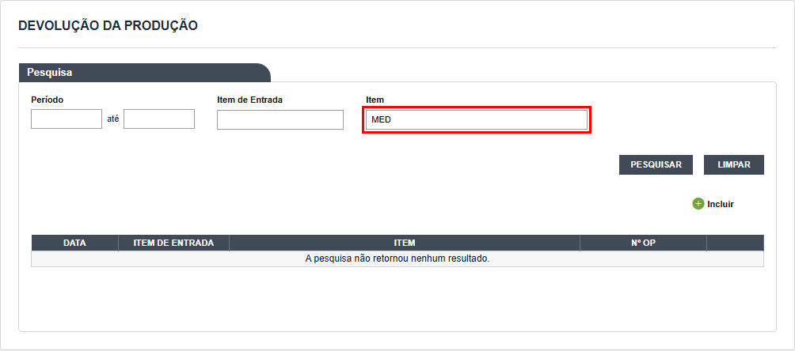
- Incluir. Clique em Incluir. O formulário abre com VOLTAR no alto e dois quadros. Em Dados da Movimentação: Cód. Movimentação (travado), Data (travada, hoje), Tipo de Movimentação travado em "SAÍDA PARA PRODUÇÃO", Ordem de Produção (até 20 caracteres), Motivo da Movimentação (lista) e Observação (até 300). Em Dados do Lote: Item de Entrada* (até 10 caracteres, com a lupa "Pesquisar Item de Entrada"), Item, Fabricante, Lote Fabricante, Validade, Custo Médio e Unid. Medida (travados), Quantidade Devolvida* (até 18) e CONFIRMAR LOTE. No rodapé, FINALIZAR e VOLTAR. O painel de endereços não aparece antes de confirmar o lote. A lista do Motivo tem SELECIONE, ENTRADA NO ESTOQUE e T MOTIVO ACHADO.
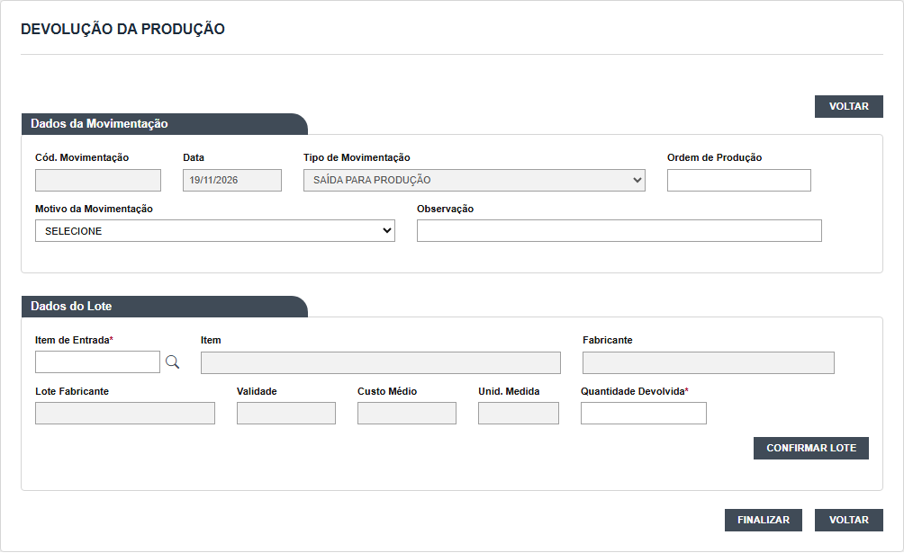
- Buscar o lote. Escreva o Item de Entrada e clique na lupa (Enter e Tab no campo não buscam). Um número inexistente (999999), um existente (000001) e texto ("abc") dão a mesma faixa vermelha: "Lote não encontrado ou não possui movimentação para produção!", com a faixa de baixo "Confirme o lote antes de finalizar a devolução!". Bloqueado no teste: não foi possível ver um lote encontrado (nenhum tem saída para produção).
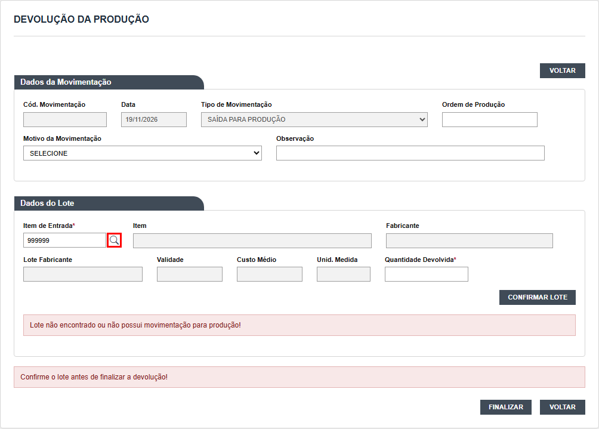
- Confirmar o lote. Clique em CONFIRMAR LOTE sem lote: aparecem duas linhas, "Lote não encontrado!" e "Quantidade não informada ou inválida!", mais a faixa "Confirme o lote antes de finalizar a devolução!". Com a quantidade 0 e sem lote, as mesmas duas linhas. As mensagens ficam acumuladas na tela até a próxima ação.
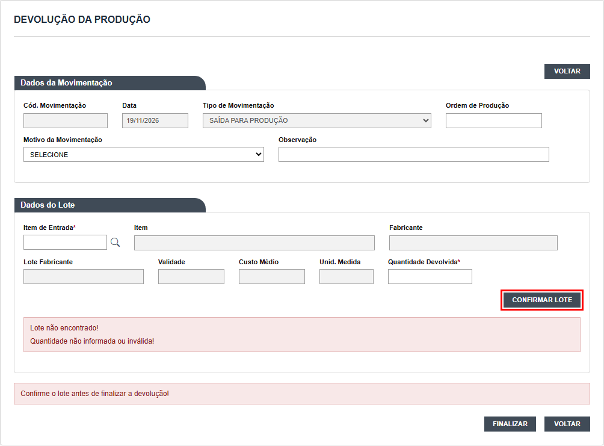
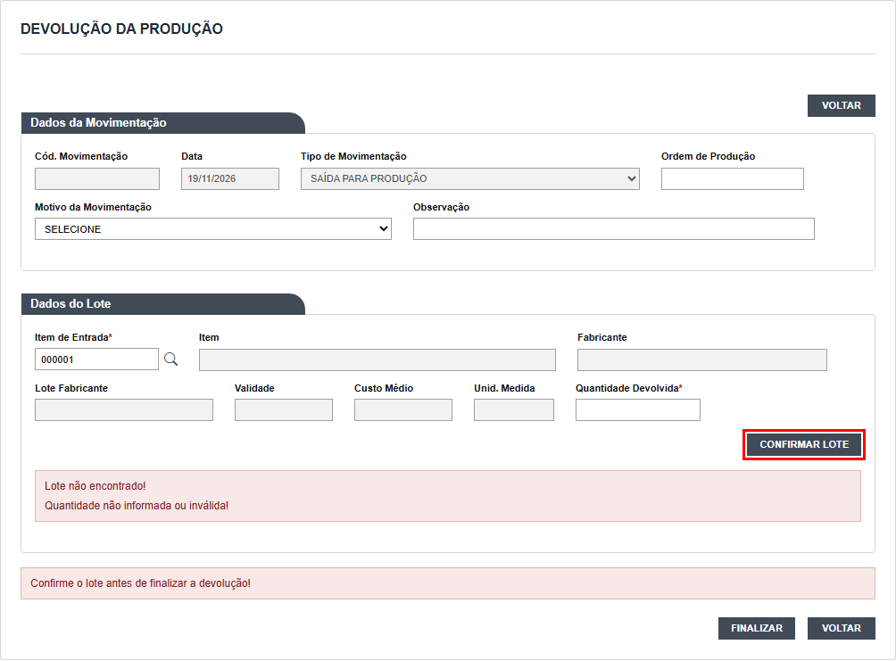
- Finalizar. Clique em FINALIZAR mesmo sem lote: a tela pergunta "Deseja finalizar a devolução?" (SIM / NÃO). Ao responder SIM aparece só a faixa "Confirme o lote antes de finalizar a devolução!" e nada é gravado. A pergunta aparece antes de qualquer conferência.
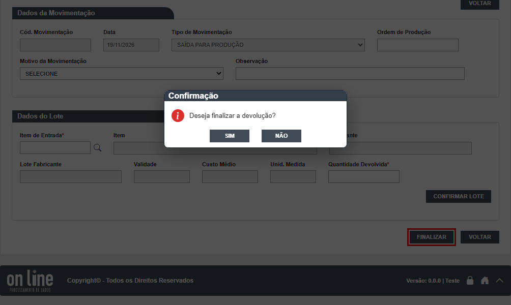
- Quantidade, endereços, finalizar com sucesso e conferir o saldo. Bloqueado no teste em 19/11/2026: dependem de um lote que saiu para produção, e nenhum existe no ambiente. Para estes passos vale o roteiro do legado abaixo, ainda a confirmar na versão nova. Responsável pelo desbloqueio: Produção ou desenvolvimento (atender uma solicitação de Produção).
Passo a passo do legado, para comparar (do legado; a confirmar na versão nova):
Consultar a lista
- No menu, abra Estoque › Devolução da Produção e clique em Pesquisar. Filtros: Período (só vale com as duas datas), Item de Entrada (código exato) e Item (o texto é procurado só no fim do nome) (dalMovimentacao.cs:537-547).
- A lista mostra Data, Item de Entrada, Item e Nº da OP, 15 linhas por página, com o ícone Visualizar. Limpar, Imprimir e Excel; Incluir para quem tem a função.
Registrar uma devolução (pelo código)
- Clique em Incluir. O formulário abre com código e data preenchidos e o tipo "DEVOLUÇÃO DE PRODUÇÃO".
- Escreva o número da ordem de produção, escolha o motivo e escreva a observação (até 300 caracteres), se quiser. O número da ordem não é conferido.
- Escreva o "Item de Entrada" do lote e clique na lupa. A tela mostra item, fabricante, lote, validade, unidade e custo médio, ou recusa com "Lote não encontrado ou não possui movimentação para produção!" (este foi o único passo visto em tela).
- Escreva a Quantidade Devolvida (obrigatória) e clique em CONFIRMAR LOTE: lote e quantidade ficam travados e o painel de endereços aparece. CANCELAR LOTE ("Deseja cancelar a devolução?") reinicia sem gravar.
- Escolha almoxarifado, local, rua, coluna e andar, escreva a quantidade do endereço e clique em ADICIONAR ENDEREÇO. Repita para dividir. O total não pode passar da quantidade devolvida.
- Clique em FINALIZAR e responda SIM em "Deseja finalizar a devolução?". A soma dos endereços precisa ser igual à quantidade devolvida.
- A tela mostra "Devolução finanlizada!" e volta para a lista. Confira na Disponibilidade do Lote que a sobra voltou ao saldo. Não há análise no CQ: a Garantia da Qualidade precisa decidir se a sobra pode ser usada sem nova avaliação.
Consultar
- O ícone Visualizar abre os dados da movimentação (item, fabricante, lote, validade, quantidade, responsável e endereços), sem os botões de gravar.
Ícones e botões da lista
| Ícone ou botão | O que faz | Quando aparece |
|---|---|---|
| PESQUISAR / LIMPAR | Filtra / esvazia (visto na tela) | Sempre |
| Incluir | Abre o formulário vazio (visto) | Na lista |
| Visualizar | Abre a devolução; Bloqueado no teste (lista sem linhas) | Depois de pesquisar com resultado |
| IMPRIMIR, EXCEL | Não existem na barra da lista | Nunca na versão nova (visto); no legado havia |
| Excluir (lixeira) | Não existe (igual ao legado) | Nunca |
| Lupa "Pesquisar Item de Entrada" | Procura o lote (só o clique; Enter e Tab não buscam) | No formulário |
| CONFIRMAR LOTE / FINALIZAR / VOLTAR | Ações do formulário (vistas) | No formulário |
| ADICIONAR ENDEREÇO / CANCELAR LOTE | Bloqueado no teste (aparecem depois do lote confirmado) | Depois de confirmar o lote (a confirmar) |
Segundo o manual do legado (do legado; a confirmar na versão nova):
| Ícone | O que faz | Quando aparece |
|---|---|---|
| Visualizar | Abre a consulta da devolução | Se o perfil tem a função de consultar |
| Imprimir / Excel | Relatório da lista | Depois de pesquisar, se o perfil tem a função de imprimir |
| Editar e Log | Não existem na tela | Nunca aparecem (a lista não tem a coluna Editar; o Log está desligado) |
Botões e ações
PESQUISAR, LIMPAR e Incluir (lista); VOLTAR, CONFIRMAR LOTE, FINALIZAR e a lupa (formulário), todos vistos na tela em 19/11/2026. ADICIONAR ENDEREÇO, CANCELAR LOTE e Excluir (endereço) só aparecem depois de um lote confirmado: Bloqueado no teste. A lista não tem IMPRIMIR, EXCEL nem Excluir.
Botões do legado (do legado; a confirmar na versão nova):
| Botão ou ação | Quando aparece | O que faz | Para onde leva | Fonte |
|---|---|---|---|---|
| Pesquisar, Limpar | Na lista | Lista as devoluções do filtro; Limpar esvazia os filtros | Não muda | devolucao_producao_lst.aspx.cs:28-50 |
| Imprimir e Excel | Depois de pesquisar, se o perfil tem a função de imprimir | Abre o relatório da lista (PDF ou planilha) | Não muda | devolucao_producao_lst.aspx.cs:84-85 e 367-410 |
| Incluir | Se o perfil tem a função de incluir | Abre o formulário vazio | Formulário | devolucao_producao_lst.aspx.cs:23 e 45-48 |
| Visualizar | Se o perfil tem a função de consultar | Abre a consulta da devolução | Consulta | devolucao_producao_lst.aspx.cs:147-149 e 170 |
| Editar e Log | Nunca: a lista não tem a coluna Editar e a do Log está desligada; o código de Editar aponta para a tela Entrada de Produção por engano | Não existem na tela | Não se aplica | devolucao_producao_lst.aspx.cs:144-146; devolucao_producao_lst.aspx:197-203 |
| Lupa (Item de Entrada) | Formulário novo | Procura o lote e preenche os dados | Não muda | devolucao_producao_ed.aspx:146; devolucao_producao_ed.aspx.cs:230-267 |
| CONFIRMAR LOTE | Formulário novo | Confere o lote e a quantidade, trava os dois e abre o painel de endereços | Painel de endereços | devolucao_producao_ed.aspx:230; devolucao_producao_ed.aspx.cs:739-770 |
| CANCELAR LOTE | Depois de confirmar o lote | Pede "Deseja cancelar a devolução?" e reinicia a tela sem gravar | Início do formulário | devolucao_producao_ed.aspx:232; devolucao_producao_ed.aspx.cs:784-804 |
| ADICIONAR ENDEREÇO | Depois de confirmar o lote | Confere o endereço e a quantidade e põe na grade, sem gravar | Grade de endereços | devolucao_producao_ed.aspx:338; devolucao_producao_ed.aspx.cs:476-594 |
| Excluir (endereço) | Grade de endereços | Tira o endereço da grade | Grade de endereços | devolucao_producao_ed.aspx:401; devolucao_producao_ed.aspx.cs:596-606 e 653-667 |
| FINALIZAR | Formulário novo | Pede a confirmação, confere a soma dos endereços e grava a devolução | Lista | devolucao_producao_ed.aspx:436; devolucao_producao_ed.aspx.cs:162-221 |
| VOLTAR | Sempre | Volta para a lista sem gravar | Lista | devolucao_producao_ed.aspx:438; devolucao_producao_ed.aspx.cs:217-222 |
Mensagens do sistema
Textos vistos na tela em 19/11/2026: "Lote não encontrado ou não possui movimentação para produção!" · "Lote não encontrado!" · "Quantidade não informada ou inválida!" · "Confirme o lote antes de finalizar a devolução!" · "Deseja finalizar a devolução?" · "A pesquisa não retornou nenhum resultado." Não vistos (dependem do lote): o texto de sucesso da gravação e as mensagens de endereço. Textos do legado: abaixo.
Mensagens do legado (do legado; a confirmar na versão nova):
Só uma mensagem foi vista numa tela real: a da recusa do lote (CT-EST-091, rodada 7, 13/10/2026).
| Mensagem (texto exato do código) | Quando aparece | Fonte |
|---|---|---|
| Lote não encontrado ou não possui movimentação para produção! | O "Item de Entrada" não existe ou o lote não saiu por solicitação do tipo Produção (vista em teste, CT-EST-091, 13/10/2026) | devolucao_producao_ed.aspx.cs:260 |
| Lote não encontrado! / Item não encontrado | Confirmar o lote ou endereçar sem lote ou sem item escolhido | devolucao_producao_ed.aspx.cs:522, 525 e 744 |
| Quantidade não informada ou inválida! | CONFIRMAR LOTE sem quantidade devolvida ou com zero | devolucao_producao_ed.aspx.cs:747 |
| O Campo quantidade é obrigatório! | Quantidade devolvida ou quantidade do endereço vazia | devolucao_producao_ed.aspx:204 e 312 |
| Almoxarifado não informado! / Local não Informado! / Rua não informada! / Coluna não informada! / Andar não informado! | Endereço incompleto | devolucao_producao_ed.aspx:251-303 |
| Este endereço já foi utilizado! | O mesmo endereço duas vezes na lista | devolucao_producao_ed.aspx.cs:559 |
| Total de itens é maior que o total informado! | A soma dos endereços passa da quantidade devolvida | devolucao_producao_ed.aspx.cs:568 |
| Endereço informado não é válido para o Lote! | O endereço está ocupado por outro lote | devolucao_producao_ed.aspx.cs:530-531 |
| Nenhum endereço foi informado para o Lote! | FINALIZAR sem nenhum endereço na lista | devolucao_producao_ed.aspx.cs:179 |
| A soma do total endereçado está divergente do total do devolvido! | FINALIZAR com a soma dos endereços diferente da quantidade devolvida | devolucao_producao_ed.aspx.cs:184 |
| Deseja finalizar a devolução? / Deseja cancelar a devolução? | Confirmações de FINALIZAR e de CANCELAR LOTE | devolucao_producao_ed.aspx.cs:715 e 720 |
| Devolução finanlizada! | Devolução gravada (erro de digitação "finanlizada") | devolucao_producao_ed.aspx.cs:199 |
| Nenhum item movimentado! | Grade de endereços vazia | devolucao_producao_ed.aspx.cs:648 |
| Erro ao consultar registro! | Falha ao abrir uma devolução gravada | devolucao_producao_ed.aspx.cs:115 |
| A pesquisa não retornou nenhum resultado. | Lista vazia | devolucao_producao_lst.aspx.cs:120 |
| Data inicial inválida! / Data final inválida! | Datas do período fora do formato | devolucao_producao_lst.aspx:61 e 75 |